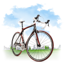
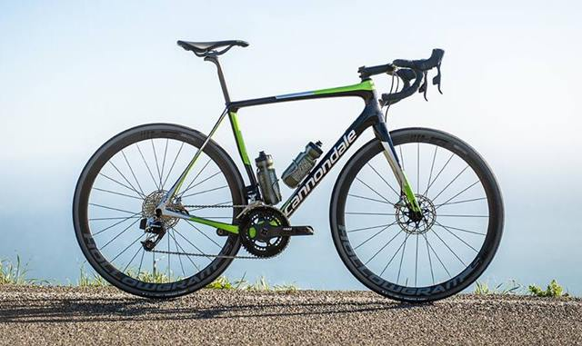

Día Mundial de la Bicicleta
Banner Conmemorativo
Día Mundial de la Bicicleta


Día Mundial de la Bicicleta

Bicicletas de Montaña (MTB): están diseñadas para “fuera de ruta” por lo que son bastante resistentes.
Bicicletas de Ruta: Son bicicletas orientadas a obtener velocidad en pavimento, de construcción más ligera que otras bicicleta, están dotadas con ruedas más grandes, delgadas y provistas de llantas angostas y con dibujo liso
Bicicletas Híbridas: Las bicicletas híbridas son bastante versátiles ya que combinan características de las bicis de montaña y de las de ruta.Estas bicicletas nacieron como una solución para quienes necesitan una bicicleta para la ciudad, pero que tenga la flexibilidad de ser usada en diferentes terrenos.
Bicicletas Urbanas: Estas bicicletas fueron concebidas para la ciudad, por lo que son de construcción bastante solida tanto en su cuadro como en sus ruedas. Están perfectamente adecuadas para soportar las condiciones de una ciudad (baches, banquetas, topes, etc.)
Bicicletas plegables: La gran mayoría de estas bicicletas usan ruedas pequeñas, siendo 16 y 20″ las más comunes, aunque es posible encontrar plegables con rodados más convencionales. Casi todas las plegables están diseñadas para uso urbano, no obstante existen modelos que aguantan viajes largos sin problemas.
Fixies y single speed: Si bien su conceptp es el de ser una bicicleta sencilla, se han convertido en algo así como las bicicletas de culto para el ciclismo urbano. Su principal característica es su diseño simple y en muchos casos minimalista, sumamente eficientes y funcionales.
Cruisers: Este tipo de bicicletas están diseñadas para trayectos cortos y sobre pavimento preferencialmente. Su geometría y manubrio característico permiten una postura sumamente relajada.
MBX: Las BMX utilizan cuadros pequeños y resistentes, ideales para saltos y acrobacias.
1. Scott: Ha desarrollado una amplia gama de productos para el ámbito ciclista, pues además de bicicletas, también tienen sus propias gafas, protecciones, calzado y ropa; lo que las ha hecho despuntar hasta convertirla en la mejor marca de bicicletas para carretera.

2. Giant: Sus cómodas bicicletas con cuadros sencillos aunque efectivos, ideales para los clientes con gustos más tradicionales, han posicionado a la marca Giant como una de las mejores en fabricación de bicicletas de carretera.

3. BMC: Es una firma Suiza que, poco a poco, está haciéndose un hueco entre lo mejor del mercado en lo que a bicicletas de carretera y montaña respecta. Si bien su catálogo no cuenta con demasiada variedad, sí que es cierto que sus bicicletas están fabricadas siguiendo los estándares más modernos y demandados por los aficionados a este deporte, algo que puede hacer crecer aún más a esta firma en auge.

4. Orbea: Firma vizcaína que ha aumentado su popularidad gracias al perfeccionamiento de sus productos de gamas superiores, algo que los ciclistas profesionales han agradecido y premiado.

5. Cannondale: mantiene su posición como una de las mejores marcas de bicicleta de carretera. Eso sí, para los ciclistas que deseen personalizar su modelo, no es la mejor opción, pues en este campo Cannondale debe actualizarse.
El 19 de abril está marcado en el calendario como el Día Mundial de la Bicicleta. El porqué de esta celebración tiene detrás una historia muy interesante que merece la pena recordar hoy.
En 1943, el químico suizo Albert Hofmann realizó un experimento en el que él mismo se atrevió a probar la dietilamida de ácido lisérgico (LSD) -en pequeñas cantidades y de manera voluntaria- para determinar sus efectos en el cuerpo humano. Tras la prueba, Hofmann experimentó alteraciones de la percepción y tuvo que pedir a su ayudante que le acompañase a casa.
En aquella época la Segunda Guerra Mundial aún no había finalizado y el desplazamiento en vehículos motorizados estaba prohibido, así que ambos tuvieron que hacer el camino de vuelta en bicicleta.
El experimento del químico sirvió para descubrir una sustancia psicoactiva capaz de provocar alteraciones de la conciencia, una potente herramienta psiquiátrica.
La bicicleta es uno de los medios de transporte más divertidos para hacer una ruta por la ciudad. Si estás en Madrid, las dos ruedas son perfectas para hacer una ruta por los mercados Gourmet que han aflorado en la capital. En los últimos meses muchos de los mercados de barrio antiguo han visto como -tras una reforma- sus calles vuelven a llenarse de gente. La ruta en bicicleta que te proponemos desde Cambio16 está pensada para descubrirlos uno a uno.


 2
2 3
3 4
4 6
6